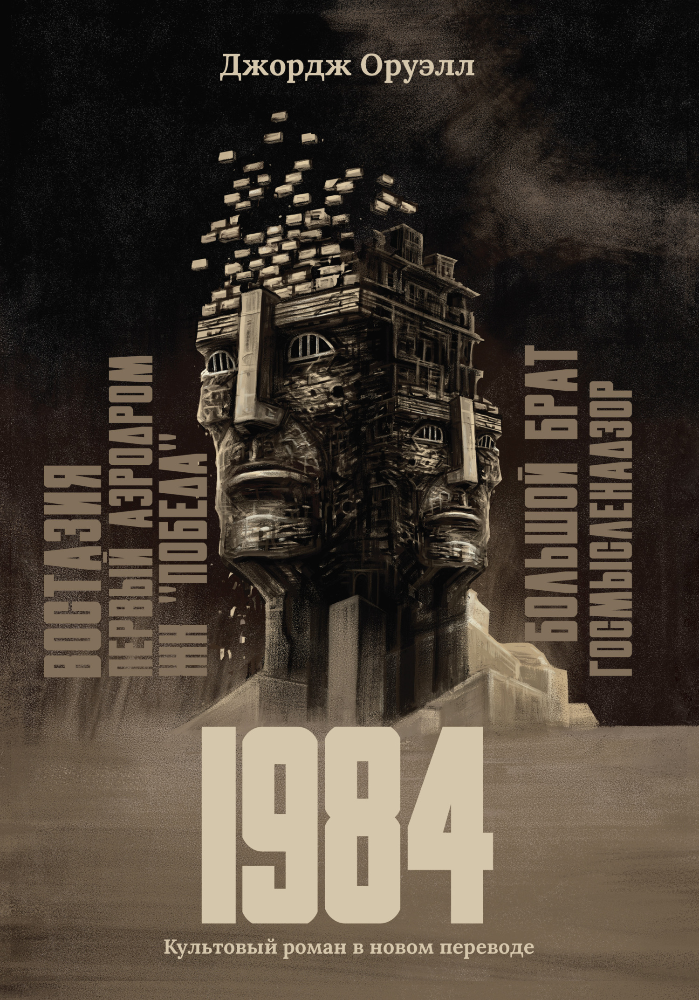

Антиутопический роман о мире тотального контроля, где государство управляет не только действиями, но и мыслями людей.
Роман «1984» Джорджа Оруэлла описывает общество будущего, в котором власть полностью контролирует жизнь человека. Главный герой пытается сохранить свободу мышления в мире, где даже мысли находятся под наблюдением. Произведение поднимает важные вопросы свободы, правды и индивидуальности.
© 2026 Все права защищены